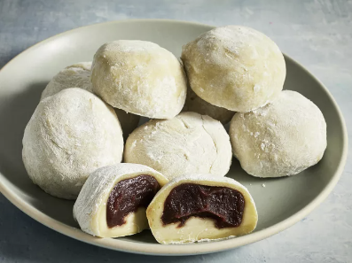

How to Make Mochi

Description
What Is Mochi?
Mochi is a bun chaped Japanese dessert made from sweet
glutinous rice flour, or mochigome. It has a soft, chewy texture
that is somewhat elastic. Mochi is often flavored with matcha
which gives it a light green hue.
What is Mochi Made Of?
Here is what you'll need to make homemade mochi:
- Red Bean Paste
- Glutinous Rice Flour
- Green Tea Powder
- Water
- Sugar
- Cornstarch
Ingredients:
- Sweetened Red Bean Paste: 1 Cup
- Glutinous Rice Flour: 1 Cup
- Green Tea Powder: 1 Teaspoon
- Water: 1 Cup
- White Sugar: 1/4 Cup
- Cornstarch: 1/2 Cup
Steps:
- Gather all the ingredients.
- Wrap the red bean paste in aluminum foil and place into the freezer until solid for at least an hour.
- Mix glutinous rice flour and green tea powder thoroghly in a microwave safe bowl.
- Stir in water and sugar, and mix until mixture is smooth.
- Cover the bowl in plastic or cling wrap and microwave for 1 minute.
- Take out mixture, and fold it until it is smooth again.
- Replace plastc wrap and microwave for another minute.
- Repeat the fold step and microwave for another 30 seconds.
- Remove red bean paste from freezer and divide into equal size balls.
- Dust a work surface with cornstarch. Roll about 2 tablespoons of hot rice flour mixture into a ball. Flatten the ball and place one ball of frozen red bean paste in the center. Pinch and press the dough around the bean paste until completely covered.
- Sprinkle with additional cornstarch and place mochi, seam-side down, in a paper muffin liner to prevent sticking.
- Repeat steps to make remaining mochi.